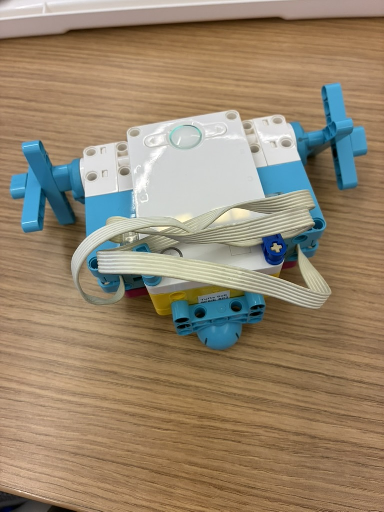

How do you create a Lego machine that can move without the use of wheels? Simple! You make wheels out of not-wheels.
Here is the not-wheeled-walker9000, an amazing contraption that can get from point A to point B without the use of clunky old wheels. Although, it should be noted, that you have no control over where point B is.
This little guy will make you wish that someone reinvented the wheel decades ago!